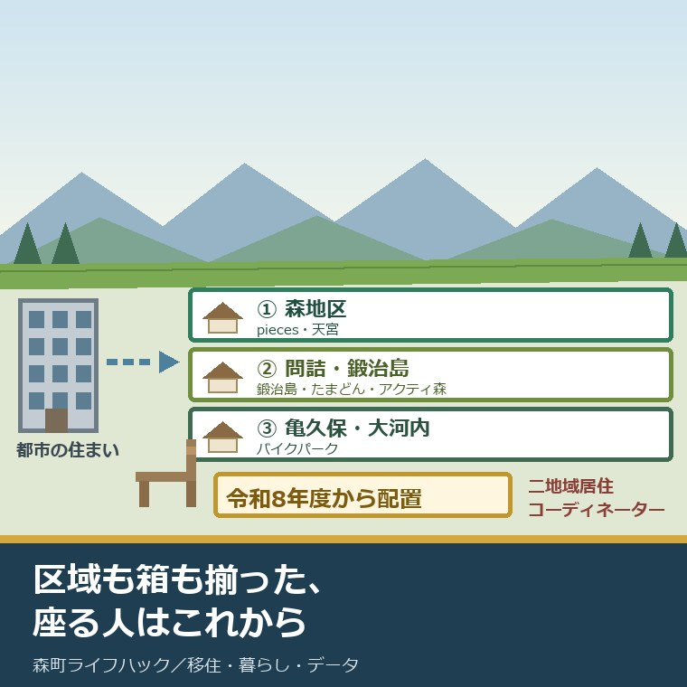
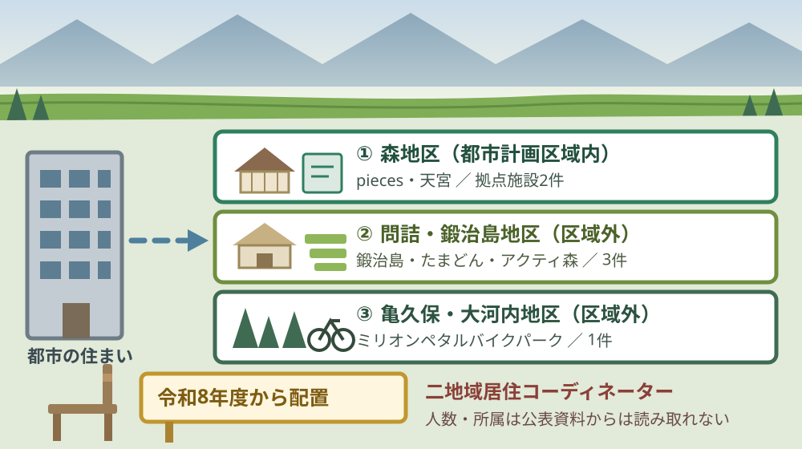
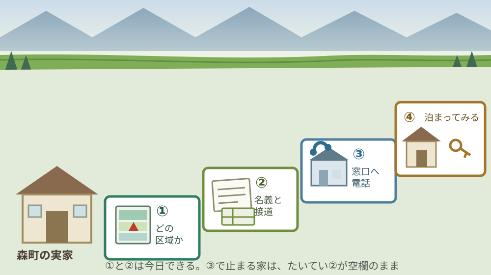

森町特定居住促進計画｜二地域居住コーディネーターを置く年

この記事の要点
Q. 森町に実家と土地が残っています。住むつもりはないのですが、関わり続ける形はありますか。
A. 森町は令和8年3月31日に森町特定居住促進計画を策定し、森地区・問詰・鍛治島地区・亀久保・大河内地区の3区域を指定しました。令和8年度から二地域居住コーディネーターを配置すると町公式は記しています。ただし初年度のデュアルスクール受入目標は1組です。まず自分の家がどの区域かを確かめてください。
静岡県周智郡森町（遠州森町）に実家や土地がある。けれど自分は町の外で働いていて、戻って住む予定は今のところない。この記事は、そういうご家族に向けて書いています。
その立場の方には、これまで選択肢が二つしかありませんでした。移住して住むか、そのまま置いておくか。その真ん中に町が制度の枠を用意したのが、今年の話です。
今日は2026年8月23日。森町特定居住促進計画が策定されたのは令和8年3月31日で、まだ5か月弱しか経っていません。計画期間の2年目、令和8年度の途中にあたります。
先に結論を書きます。枠組みは、思っていたより具体的に立っています。区域も施設名も所在地も、計画本体に番地まで書いてあります。
その上で、私が引っかかっている点も先に書きます。初年度の受入目標が1組だという点です。数字を小さいと責める話ではなく、その1組を誰が受け止めるのかという話です。
順に、公表されている内容から並べます。数字を並べたあとで、それが1世帯あたり・1軒あたりどういう意味になるかを計算します。
公式情報から確定できること
2026年8月23日時点で、森町公式サイトと、そこに掲載された森町特定居住促進計画（確定版）から確認できたことを並べます。出典は記事の末尾に載せています。
一つ目。計画の名称は森町特定居住促進計画です。森町公式の二地域居住の促進のページは、策定年度を令和7年度、対象区域を森町全域としています。計画本体の表紙には令和8年3月31日策定と記されています。
二つ目。計画期間は令和7年度から令和11年度までの5年間です。計画本体の表紙に明記されています。令和8年度は、その2年目にあたります。
三つ目。特定居住促進区域は3つです。計画本体によれば、①森地区（都市計画区域内）、②問詰・鍛治島地区（都市計画区域外）、③亀久保・大河内地区（都市計画区域外）が指定されています。
四つ目。区域ごとに役割が書き分けられています。森地区は「伝統文化と生活が重なる誇りの拠点」、問詰・鍛治島地区は「農の営みと人の暮らしが息づく風土」、亀久保・大河内地区は「豊かな自然資本と癒しの風景」と記されています。
五つ目。拠点施設は6件、すべて整備済みです。計画本体の表によれば、コワーキングスペース「pieces」（森町森305・近隣商業地域）、お試し居住住宅「鍛治島」（森町鍛治島27-2・都市計画区域外）、コミュニティスペース「たまどん」（森町鍛治島3-1・都市計画区域外）、お試し居住住宅「天宮」（森町天宮1204・第一種中層住居専用地域）、森町体験の里「アクティ森」（森町問詰1115-1・都市計画区域外）、ミリオンペタルバイクパーク（森町三倉2167-1・都市計画区域外）の6件です。
六つ目。整備主体は町だけではありません。同じ表によれば、piecesと鍛治島と天宮は一般社団法人モリマチリノベーション、たまどんは任意団体「てんぽうの里」、アクティ森は森町、バイクパークはミリオンペタル合同会社です。6件のうち町が主体なのは1件です。
七つ目。令和7年6月に国土交通省のモデル事業へ採択されています。森町公式によれば、森町二地域居住先導的プロジェクト実装事業として採択され、ヤマハ発動機株式会社、大学、民間企業と連携するとされています。
八つ目。令和8年度以降に二地域居住コーディネーターを配置するとされています。森町公式の同ページは、「教育・住まい・仕事」が連動した「第二のふるさと」づくりをスタートすると記しています。
九つ目。町は「別荘生活」ではないと明言しています。同ページは、二地域居住を帰りたくなる「第二の実家」とすることを目指すとしています。言葉の選び方に、狙いが出ています。
十番目。年度ごとの進み方が表になっています。計画本体によれば、令和7年度が調査・検討、令和8年度が小規模実証、令和9年度が受入加速、令和10年度が受入定常化、令和11年度が評価・展開です。
十一番目。令和8年度の中身は「デュアルスクール受入（目標1組）」と「空き家流通の現場交渉着手」です。同じ表に、親子教育プログラムの定期開催と並べて書かれています。
十二番目。主要指標（KPI）が別表に7項目あります。コワーキングスペース利用者が年間30人、シェアキッチンを使った交流イベントが年間20回、お試し居住住宅「鍛治島」の年間稼働日数が延べ300日、「天宮」が延べ200日です。
十三番目。デュアルスクールの受入目標は年度で増えていきます。同じ別表によれば、受入家族数は令和8年度1組、令和9年度3組、令和10年度以降5組以上、受入校・園数は令和8年度1校（園）、令和9年度3校（園）、令和10年度以降5校（園）です。
十四番目。空き家の流通は、外部の事業者と組む形が書かれています。計画本体は、専門事業者（株式会社ネクスウィル等）と連携し、副業型「地域活性化起業人」の派遣等によりオーナー交渉、流通促進、利活用支援を進めるとしています。
十五番目。特定居住支援法人の指定が予定されています。同じ項目に、アンケート調査、インタビュー、モニタリングの継続実施と並べて記されています。
十六番目。知事への意見聴取は令和8年2月27日に行われています。計画本体の「その他」の欄に日付が入っています。一方、区域内の住民の意見については、自治会代表者との意見交換会・アンケート調査等を「今後実施予定」としています。
十七番目。空き家・空き地バンクの公開物件は23件です。森町公式の空き家・空き地バンク物件公開ページによれば、2026年8月17日更新時点で空き家12件・空き地11件。担当は定住推進課移住交流係（0538-85-6321）です。
十八番目。町の人口と世帯数も押さえておきます。森町公式の月別人口によれば、2026年8月1日現在の人口は16,422人（男8,213人・女8,209人）、世帯数は6,763世帯です。

この絵で描きたかったのは、箱はもう建っているという点です。拠点施設6件は全部「整備済」と書かれています。足りないのは建物ではなく、間に立つ人のほうです。その人が置かれるのが令和8年度です。
森町の暮らしに置き換えると、この目標は何軒分か
ここからは、公表された数字を割り戻します。私の計算であることを先に断っておきます。
令和8年度のデュアルスクール受入目標は1組です。森町の6,763世帯で見ると、6,763分の1。比率として書くと小さく見えますが、この数字の読み方は逆だと私は思っています。
受入には、学校側の受け入れ、住まいの確保、地区への顔つなぎがまとめて要ります。1組でも、間に立つ人が丸ごと1件を抱えることになります。目標1組は、控えめというより、実務の重さを知った数字に見えます。
お試し居住住宅の稼働目標も割ってみます。鍛治島の年間300日は稼働率82.2％、天宮の年間200日は54.8％です。2軒合わせて年730日のうち500日、68.5％になります。
この82.2％という数字を、私は賃貸の目線で見ます。一般的な貸家で年間の空室が2か月以内という水準です。短期滞在の施設でこれを狙うなら、予約の受付と清掃と鍵の受け渡しが毎週回っている必要があります。
コワーキングスペースの年間30人は、月に2.5人です。この数字だけは、逆に控えめに見えます。ただし延べ人数か実人数かは、別表からは読み取れませんでした。
空き家の側も数えます。公開されている空き家は12件です。森町の6,763世帯に対して、いま外から選べる家が12軒。二地域居住を検討する家族が最初にぶつかるのは、この数字だと私は考えています。
その12件の中身も見ておきます。売却が9件、賃貸が3件。賃貸は月3万円から月4万5千円の3件だけです。「まず借りて通ってみる」という入り方をしたい家族には、選択肢が3つしかありません。
森町での二地域居住そのものの考え方は、別の記事で整理しました。移住か現状維持かの二択をやめるという話は、森町の二地域居住について書いた記事にまとめています。
良い点：この計画のよくできているところ
まず、この計画のよくできているところを数えます。批判の前に置くのが、私の書き方の順番です。
一つ目。区域を町全域に広げず、3つに絞っています。森町公式のページは対象区域を森町全域としていますが、計画本体は促進区域を3つに限定しました。絞ったほうが、受け入れる側の負担が読めます。
二つ目。拠点施設を番地まで書いています。森町森305、森町鍛治島27-2、森町天宮1204。ここまで書いてあれば、読んだ側は地図で位置を確かめられます。計画によくある「町内に整備する」で終わっていません。
三つ目。都市計画区域の内か外かを併記しています。これは不動産の実務では最初に見る欄です。区域外なら建築確認の扱いも接道の考え方も変わります。書いてある計画は、そう多くありません。
四つ目。整備主体を実名で書いています。一般社団法人モリマチリノベーション、任意団体「てんぽうの里」、ミリオンペタル合同会社。町が全部やる形になっていないことが、表を見れば分かります。
五つ目。目標が数字で置かれています。年間30人、延べ300日、1組、3組、5組以上。達成できたかどうかを、外から数えられる形になっています。
注文したい点：計画からは読み取れないところ
その上で、一事業者として注文したい点を並べます。町の担当も限られた人数で動いていることは承知の上です。
一つ目。コーディネーターの人数と所属が書かれていません。森町公式のページは「配置し」とだけ記し、計画本体の年度別の表には、この職の記載そのものがありません。1人なのか、既存の職員の兼務なのかで、動く量がまるで変わります。
二つ目。区域内の住民への説明が、計画の後ろに来ています。知事への意見聴取は令和8年2月27日に済んでいますが、自治会代表者との意見交換会は「今後実施予定」です。受け入れるのは地区の人です。順番が逆だと私は感じます。
三つ目。デュアルスクールの受入条件が書かれていません。区域外就学制度や体験入学制度を活用するとありますが、何日から何日まで通えるのか、住民票をどうするのかは読み取れません。ここが決まらないと、家族は日程を組めません。
四つ目。空き家の出し手への案内がありません。流通強化は買い手・借り手側の言葉で書かれています。実家を持っている側が「では、うちはどうすればいいのか」を読める段落が、計画には見当たりませんでした。
五つ目。お試し居住から先の受け皿が、数字の上で細いままです。年間500日分の滞在を作っても、その先に買える・借りられる家が12軒では、次の段に上がれません。一事業者としては、流通の目標件数も別表に置いてほしいと考えています。

対案・結論：今日、実家や土地がある家族が確かめられること
結論を急がないと決めたうえで、今日から動ける順番を書きます。順番はイラストのとおりです。
| 順番 | 確かめること | 確認先 |
|---|---|---|
| 1 | 実家の大字が、3区域のどれに入るか | 森町特定居住促進計画（確定版）の区域図と、登記の所在 |
| 2 | 名義が誰か、相続が済んでいるか | 登記事項証明書。法務局または法務局の証明サービス |
| 3 | 都市計画区域の内か外か | 森町の都市計画の担当窓口 0538-85-2111（代表） |
| 4 | 空き家・空き地バンクに出せる状態か | 森町 定住推進課 移住交流係 0538-85-6321 |
| 5 | お試し居住住宅に、家族で1泊できる日程があるか | 鍛治島・天宮の運営主体。まずは移住交流係へ |
| 6 | 子の学校を、いつ・何日ずらせるか | いま通っている学校と、森町の教育委員会 |
1は、今日できます。実家の住所を出して、大字を確かめるだけです。森、天宮、問詰、鍛治島、亀久保、大河内、三倉。この名前が入っていれば、計画の区域に近い位置にあります。
2も今日できます。登記事項証明書を1通取れば、名義と地番と地目が一度に分かります。ここが親の名義のままだと、貸すことも売ることも、その先で必ず止まります。
3は電話1本です。都市計画区域の内か外かで、建て替えのしやすさが変わります。計画の表を見れば、鍛治島も大河内も区域外だと分かります。
4と5は、同じ電話で聞けます。担当は同じ移住交流係です。「まだ売るか決めていない」と先に言って構いません。決めていない相談を受ける窓口として、バンクは作られています。
6は、子の年齢で答えが変わります。学期の切れ目に合わせるか、九月に動くかで段取りが違います。その逆算は九月に転入するか、四月に合わせるかを整理した記事に書きました。
町の移住パンフレットを先に読む方もいます。ただ、読む前に自分の条件を三つ決めておくほうが早いというのが私の考えです。その理由はTENCOMORIの読み方をまとめた記事に書いています。
家族に残す記録
ここからは、確認した内容を紙1枚に残すための項目です。次に動く人が同じことを調べ直さないためのものです。
書き留めるのは、実家の所在（大字・地番）、区域の該当有無、名義人、地目、接道の幅、問い合わせた窓口と日付です。この6つで、家族の間の話が具体になります。
あわせて、定住推進課移住交流係の電話番号（0538-85-6321）、役場代表の電話番号（0538-85-2111）、空き家・空き地バンクの登録番号（登録済みの場合）、お試し居住住宅を使った日付を並べておきます。
住所を決めるとき、地区名だけで判断すると後から効いてきます。通勤・買い物・災害地図を重ねる見方は、森町の住所選びについて書いた記事にまとめました。
実家の名義、境界、農地、道路まで含めて順に整理したい方は、ふじがおか実家カルテの森町相談窓口もご利用ください。住所が分かれば、建物と敷地のどちらについても、確認する順番を整理できます。
大石の視点
ここからは、私（大石浩之）の個人の考えです。公的な事実とは分けてお読みください。私自身が森町の二地域居住の窓口に相談した体験があるわけではありません。以下は、公表資料と自分の商売から見た読み方です。
制度が立派でも、回す人がいなければ動きません。この計画で私が一番見ているのは、3区域でも6施設でもなく、令和8年度から置かれる二地域居住コーディネーターが何人で、どこに座るのかという一点です。そこが決まっていない限り、あとの数字は絵の上の数字にとどまります。
そう考える理由は、自分の商売にあります。私の仕事で一番時間を食うのは、査定でも契約書でもありません。持ち主と地区と役所の間を往復する時間です。1件の空き家を動かすのに、電話と現地と待ち時間で、平気で半年かかります。
その半年を、コーディネーターは1人で何件抱えられるか。私の感覚では、片手間の兼務なら年に2件か3件が限界です。目標が1組から3組へ、3組から5組へ上がる設計になっている以上、人の側も同じ形で増えないと辻褄が合いません。
ここは正直に書きます。令和8年度の目標1組を、私は小さすぎると見るべきか、実務を知った正直な見積りと見るべきか、まだ決めかねています。行政の計画では、大きな数字を置いて未達で終わるほうがよくある形です。1組と書いた勇気は評価したい。一方で、1組では地区の側に何も起きないのも確かです。この二つを、私はまだ整理できていません。
それでも一つだけ言い切ります。この計画の成否は、区域の広さでも施設の数でもなく、コーディネーターが1人分の時間を持てるかどうかで決まります。兼務で0.2人分なら、5年経っても別表の数字は動きません。
不動産の目で見て、もう一つ気になっていることがあります。お試し居住住宅は「泊まる」ための施設で、「持つ」ための入口ではありません。泊まった家族が次に探すのは、買える家か借りられる家です。そこが12軒では、階段の途中が抜けています。
だから、実家を持っている側にとっては、いま動く意味があると私は考えています。選べる家が12軒しかない市場に、13軒目として出るということです。これは売却の勧めではありません。貸す、期間を区切って使ってもらう、という形も含めての話です。
森町の可能性は、まだ十分に残っていると私は見ています。箱も区域も、国のモデル事業の採択も、すでに揃っているからです。足りないのは、間に立つ人の時間だけです。
結論が保留のままでも、確認済みの事実が一つ増えたなら、それは前進です。実家がどの区域に入るか分かった。名義が誰か分かった。どちらも、次の判断を軽くします。
まとめ
- 森町特定居住促進計画は令和8年3月31日策定、計画期間は令和7年度から令和11年度までの5年間（2026年8月23日確認）
- 特定居住促進区域は森地区（都市計画区域内）、問詰・鍛治島地区（都市計画区域外）、亀久保・大河内地区（都市計画区域外）の3区域
- 拠点施設は6件で、pieces（森町森305）、鍛治島（森町鍛治島27-2）、たまどん（森町鍛治島3-1）、天宮（森町天宮1204）、アクティ森（森町問詰1115-1）、ミリオンペタルバイクパーク（森町三倉2167-1）。いずれも整備済
- 整備主体6件のうち森町が主体なのはアクティ森の1件で、他は一般社団法人モリマチリノベーション、任意団体「てんぽうの里」、ミリオンペタル合同会社
- 森町公式によれば、令和7年6月に国土交通省のモデル事業へ採択され、ヤマハ発動機株式会社、大学、民間企業と連携する
- 森町公式は、令和8年度以降の取組として二地域居住コーディネーターを配置するとしている
- 年度別の進み方は、令和7年度が調査・検討、令和8年度が小規模実証、令和9年度が受入加速、令和10年度が受入定常化、令和11年度が評価・展開
- 主要指標は、コワーキングスペース利用者が年間30人、シェアキッチンの交流イベントが年間20回、お試し居住住宅「鍛治島」が延べ300日、「天宮」が延べ200日
- デュアルスクール受入家族数の目標は令和8年度1組、令和9年度3組、令和10年度以降5組以上
- 計画は、専門事業者と連携した副業型「地域活性化起業人」の派遣、特定居住支援法人の指定を掲げている
- 知事への意見聴取は令和8年2月27日。区域内の住民への意見交換会・アンケートは「今後実施予定」
- 森町空き家・空き地バンクの公開物件は、2026年8月17日更新時点で空き家12件・空き地11件の合計23件
- 私の計算では、鍛治島の年間300日は稼働率82.2％、天宮の年間200日は54.8％、2軒合計で68.5％
- 私の計算では、賃貸で出ている空き家は3件（月3万円から月4万5千円）で、まず借りて通う入り方の選択肢は3つ
- コーディネーターの人数、常勤か兼務か、所属する窓口は、森町公式ページと計画本体のいずれからも読み取れなかった
よくある質問
Q1. 森町特定居住促進計画とは何ですか。
A1. 森町公式によれば、令和8年3月31日に策定された、二地域居住を進めるための町の計画です。計画期間は令和7年度から令和11年度までの5年間で、森地区、問詰・鍛治島地区、亀久保・大河内地区の3区域を特定居住促進区域に指定しています。町は二地域居住を別荘生活ではなく、帰りたくなる第二の実家とすることを目指すとしています。
Q2. 二地域居住コーディネーターは、いつから置かれますか。
A2. 森町公式の二地域居住の促進のページは、令和8年度以降の取組として二地域居住コーディネーターを配置し、教育・住まい・仕事が連動した第二のふるさとづくりを始めるとしています。ただし、配置人数、常勤か非常勤か、どの窓口に座るかは、同ページと計画本体のいずれからも読み取れませんでした。定住推進課の移住交流係へご確認ください。
Q3. 森町に空き家を持っています。この計画で何か変わりますか。
A3. 計画は空き家の流通強化を柱の一つに掲げ、専門事業者と連携して所有者との交渉や利活用支援を進めるとしています。実際の入口は森町空き家・空き地バンクで、2026年8月17日更新時点の公開物件は空き家12件・空き地11件の合計23件です。登録は定住推進課移住交流係（0538-85-6321）へ申請書と同意書を出す形になります。
最後に一つだけ。ここに書いた計画名、策定日、計画期間、区域名、施設名と所在地、目標数値、空き家バンクの件数は、いずれも2026年8月23日時点で公表されている内容です。二地域居住コーディネーターの人数・勤務形態・所属、デュアルスクールの受入条件と日数、区域内住民への意見交換会の実施時期、空き家の流通件数の目標は、公表資料からは確認できていません。動く前に、必ず森町の定住推進課移住交流係（0538-85-6321）へご確認ください。
参考にした公式情報
- 二地域居住の促進／静岡県森町（計画名称が「森町特定居住促進計画」、策定年度が令和7年度、対象区域が森町全域であること、基本方針が「選ばれる暮らしの場」を目指し森町を次世代の“心のふるさと”へであること、町が二地域居住を「別荘生活」ではなく帰りたくなる「第二の実家」とすることを目指すとしていること、森町二地域居住先導的プロジェクト実装事業が令和7年6月に国土交通省のモデル事業に採択されたこと、連携機関がヤマハ発動機株式会社・大学・民間企業であること、令和8年度以降の取組として「二地域居住コーディネーターを配置し、『教育・住まい・仕事』が連動した『第二のふるさと』づくりをスタート」と記載されていること、担当が定住推進課移住交流係、電話が(0538)85-2111であることを2026年8月23日に確認。ページ更新日 2026年3月31日）
- 森町特定居住促進計画（確定版）／静岡県森町（令和8年3月31日策定、計画期間が令和7年度〜令和11年度であること、特定居住促進区域が①森地区（都市計画区域内）②問詰・鍛治島地区（都市計画区域外）③亀久保・大河内地区（都市計画区域外）の3区域であること、拠点施設がpieces（森町森305・近隣商業地域・一般社団法人モリマチリノベーション）、鍛治島（森町鍛治島27-2・都市計画区域外・同）、たまどん（森町鍛治島3-1・都市計画区域外・任意団体「てんぽうの里」）、天宮（森町天宮1204・第一種中層住居専用地域・同）、森町体験の里アクティ森（森町問詰1115-1・都市計画区域外・森町）、ミリオンペタルバイクパーク（森町三倉2167-1・都市計画区域外・ミリオンペタル合同会社）の6件でいずれも整備済であること、年度別の推進イメージが令和7年度＝調査・検討／令和8年度＝小規模実証（デュアルスクール受入 目標1組、空き家流通の現場交渉着手）／令和9年度＝受入加速（目標3組）／令和10年度＝受入定常化（目標5組以上）／令和11年度＝評価・展開であること、別表の主要指標がコワーキングスペース利用者 年間30人・シェアキッチンを利用した交流イベント 年間20回・お試し居住住宅「鍛治島」年間稼働日数 延べ300日・同「天宮」延べ200日・デュアルスクール受入家族数 令和8年度1組／令和9年度3組／令和10年度以降5組以上・受入校（園）数 令和8年度1校／令和9年度3校／令和10年度以降5校であること、専門事業者（株式会社ネクスウィル等）と連携し副業型「地域活性化起業人」の派遣等を進めるとしていること、特定居住支援法人の指定を掲げていること、都道府県知事への意見聴取が令和8年2月27日であること、区域内住民の意見反映について自治会代表者との意見交換会・アンケート調査等を「今後実施予定」としていることを2026年8月23日に確認）
- 空き家・空き地バンク物件公開ページ／静岡県森町（公開物件が空き家12件・空き地11件の合計23件であること、空き家の内訳が賃貸3件（城下 月4万5千円、天宮 月3万円、森 月4万円）と売却9件（一宮990万円、三倉100万円、睦実250万円、城下200万円（応相談）、中川 応相談、西俣1,300万円、草ケ谷860万円、飯田800万円、森 応相談）であること、空き地11件の所在が大鳥居・仲横町・天宮（開運町）・天宮・西俣・城下・南町・向天方・飯田・三倉であること、担当が定住推進課移住交流係、電話が0538-85-6321であることを2026年8月23日に確認。ページ更新日 2026年8月17日）
- 森町の月別人口／静岡県森町（2026年8月1日現在の人口が16,422人（男8,213人・女8,209人）、世帯数が6,763世帯であること、森町人口統計表・人口集計表（1歳単位）・町名別人口統計表・行政区別人口統計表がPDFで掲載されていること、担当が住民生活課住民係（電話0538-85-6312）であることを2026年8月23日に確認。ページ更新日 2026年8月5日）

最終確認日：2026-08-23 ／ 本記事は公表情報と執筆者の見解を分けて記載しています。二地域居住コーディネーターの人数・勤務形態・所属、デュアルスクールの受入条件と日数、区域内住民への意見交換会の実施時期、空き家の流通件数の目標は、公表資料から確認できていません。制度・数値は変更されることがあります。動く前に、必ず森町の定住推進課移住交流係へご確認ください。